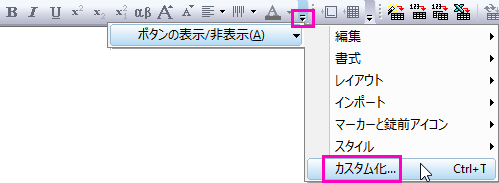
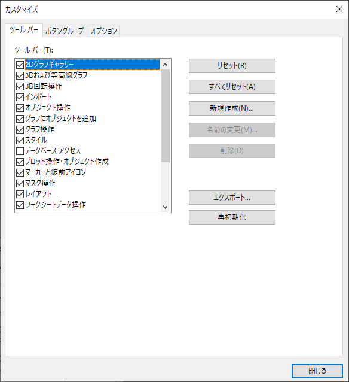
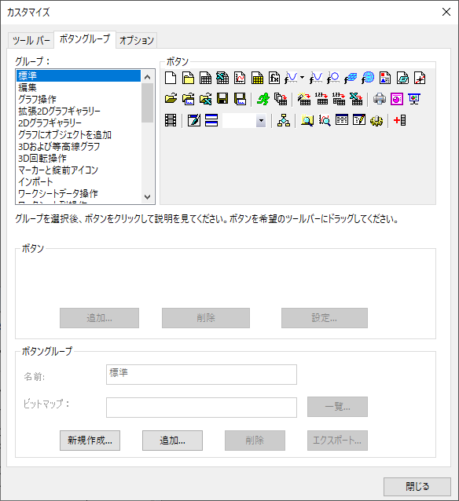
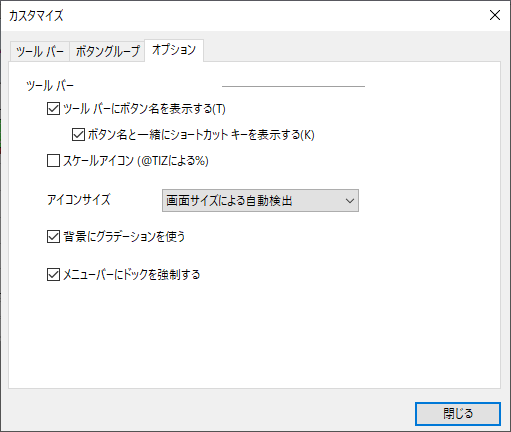

ツールバーのカスタマイズダイアログボックス
CustomToolbar-Dialog
ツールバーのカスタマイズダイアログボックスでは、インターフェイスによるOriginの組込ツールバーやボタンの制御ができます。
カスタマイズダイアログボックスを開くには
- 表示: ツールバーを選択するか、Ctrl + Tキーを押します。
または、
- ボタンの表示/非表示ボタンをクリックして、ドロップダウンリストからカスタム化を選択します。
- 
このダイアログには3つタブがあります。
ツールバータブ
ツールバータブでは以下の設定が可能です。
- 特定のツールバーのオンとオフの切り替え
- 組込ツールバーの設定を元に戻す
- ユーザ定義ツールバーの作成/名前の変更/削除
ダイアログボックスのオプション(下図)
- 
ツールバーリストボックス
- チェックボックスで、ツールバーの表示/非表示を切り替えます。
リセットボタン
- 選択した組込ツールバーのデフォルトのボタングループを、元に戻します。
全てリセットボタン
- 全ての組込ツールバーのデフォルトのボタングループを、元に戻します。
新規作成...ボタン
- ツールバー名ダイアログボックスを開いて、ユーザ定義ツールバーの名前を入力します。
名前の変更...ボタン
- ツールバー名ダイアログボックスを開いて、選択したユーザ定義ツールバーの名前を変更します。組込ツールバーに対しては、アクティブになりません。
削除ボタン
- 選択したユーザ定義ツールバーを削除します。組込ツールバーに対しては、アクティブになりません。
エクスポート...ボタン
- 名前を付けて保存ダイアログが開き、Originパッケージファイル (.opx)の名前と保存場所を指定し、ツールバーの設定とボタン版グループの情報を含むファイルを保存します。
再初期化ボタン
- 全てのツールバーの設定を初期化し、ドッキング可能なウィンドウもインストール時のの配置に戻します。
ボタングループタブ
ボタングループタブでは以下の設定が可能です。
- ツールバーにボタンを追加または削除
- 新しいボタングループ(新規ツールバー)を作成します
- OGS(スクリプト)ファイルとツールバーボタンをリンク。
ダイアログボックスのオプション(下図)
- 
グループリストボックス
- 全ての組込、ユーザ定義のボタングループをリストにします。グループを選択すると、メンバーのボタンを表示します。
ボタングループ
- 選択した「グループ」にあるボタンを表示します。
ボタンセクション：追加/削除/設定ボタン
- ユーザ定義ボタングループにボタンを追加/削除します。設定...ボタンをクリックして、ボタンの設定ダイアログを開きます。
ボタングループセクション
- 名前テキストボックス
- 選択したユーザ定義ボタングループの名前を変更します。
- ビットマップアドレスボックス
- ボタンアイコンの為の画像(.bmp形式)を指定します。直接アドレスを入力するか、一覧ボタンからブラウズも可能です。
- 新規作成...ボタン
- ボタングループの作成ダイアログを開いて、ユーザ定義ボタングループを作成します。OKをクリックすると新しいボタングループの設定を.iniファイルに保存します。
- 追加...ボタン
- ボタングループの追加ダイアログが開き、グループの.iniファイルを指定します。
- 削除ボタン
- 選択したボタングループを削除します。
- エクスポート...ボタン
- ボタングループのエクスポートダイアログを開いて、選択したボタングループのOriginのパッケージファイルをエクスポートします。このダイアログで、追加ファイルの追加や削除、および、共有の許可の設定をすることができます。
オプションタブ
- 
ツールバーにボタン名を表示する
- ツールバーにカーソルを合わせた時に、ツールチップを表示するかどうかを指定します。このチェックボックスは、デフォルトで選択されています。
ボタン名と一緒にショートカットキーを表示する
- ツールバーにカーソルを合わせた時にツールチップと共にショートカットキーも表示するか指定します。このチェックボックスは、デフォルトで選択されています。
スケールアイコン (@TIZによる%)
- アイコンが@TIZ%でスケールされる場合の値を指定します。@TIZはデフォルトで150です。50% - 200%の範囲で値を変更できます。高DPIモニタで便利です。
アイコンサイズ
- ドロップダウンリストからアイコンサイズを選択します。
- 画面サイズによる自動検出: スクリーン解像度に応じてアイコンサイズを自動で再スケールします。デフォルトは16x16ピクセルのアイコンを使用します。高解像度モニタ（画面の解像度が高さ方向に1080より大きい場合）でOriginを使用する場合は、32x32ピクセルのアイコンが使用されます。
- 16x16:: 常に16x16ピクセルビットマップを使用
- 32x32:: 常に32x32ピクセルビットマップを使用
- システムフォント設定でスケールされた16*16アイコン: アイコンのサイズを、システムフォント設定によってリスケーリングします。デフォルトは16x16ピクセルのアイコンを使用します。Originが高解像度のモニター上で動作している場合、つまり画面解像度が縦方向で1080より大きく、DPIが125より大きい場合、アイコンのサイズを大きくするにはこのオプションを選択します。
詳細はこのFAQを参照してください。
背景にグラデーションを使う
- ツールバーの背景にグラデーションを使用するかどうか指定します。このチェックボックスは、デフォルトで選択されています。
メニューバーにドックを強制する
- メニューツールバーをドラッグで移動しないようにします。このチェックボックスは、デフォルトで選択されています。